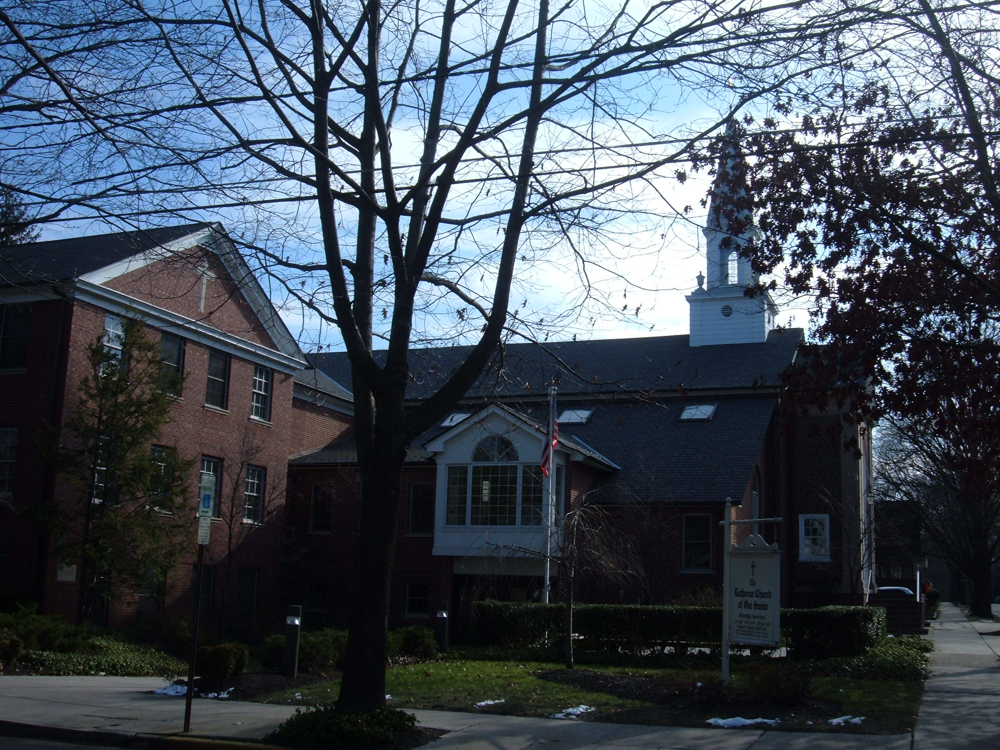

The Rev. P. Wayne Zschech, Senior Pastor | The Rev. Glenn A. Englehardt, Associate Pastor
204 Wayne Avenue, Haddonfield, NJ 08033
(856) 429-5122 (Voice) | (856) 429-7245 (Fax)

Worship
Saturday
5 PM: Contemporary "Alive" Worship Service with Guitar accompaniment
Sunday
8 and 10:30 AM: Traditional/Classic with Holy Communion on first and third Sunday of month.
9:15 AM: Reflections Worship with Holy Communion every Sunday.
Mission Statement
The Evangelical Lutheran Church of Our Savior is a faith community that worships Jesus as our Lord, proclaims and shares God's Word, welcomes all people, serves human needs, and nurtures personal and spiritual growth through fellowship all to the glory of God.
Download the April Messenger Here!
LCOS is now on Facebook: Become a Fan!